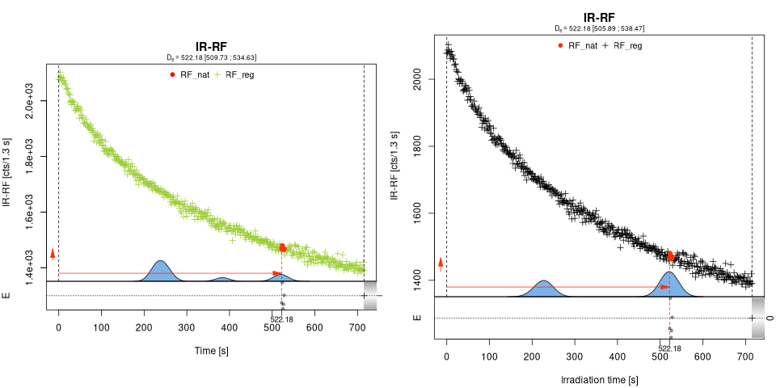
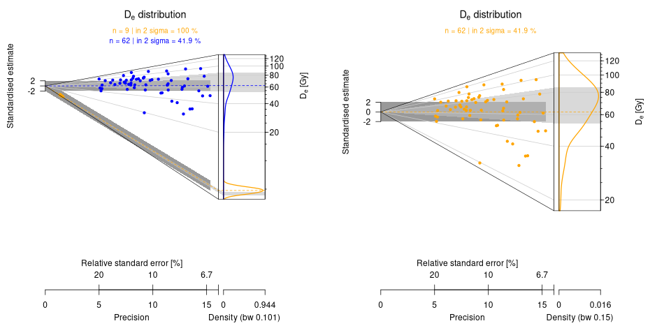
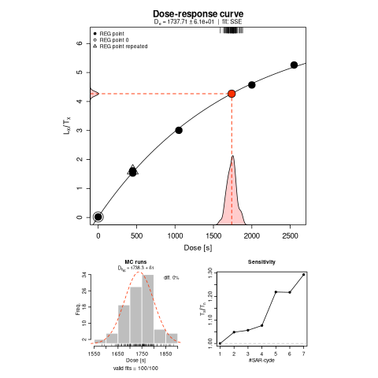

Luminescence Release 1.3.1
Less than two months since our previous release, we are very proud to announce the release of version 1.3.1 of Luminescence. This is a minor release that brings a few regression fixes and a number of cosmetic improvements, alongside increased robustness and correctness.
For a change of pace, it’s nice, every now and then, to have a release that doesn’t try to do too much or that brings breaking changes. Given the summer time and the slightly delayed release of 1.3.0, this release cycle has been short and sweet. Despite all that, in total we addressed 55 issues in 174 commits.
More correct error estimation from fit_DoseResponseCurve()
Following up on the work carried out during the previous release,
fit_DoseResponseCurve() has seen further correctness work that may impact
some analyses. In particular, in issue 1730 we discovered that the
Monte Carlo error was slightly overestimated when any MC model failed to fit.
Effectively, the error was computed including a spurious De of 0 if an
iteration didn’t find a fit for the data.
This happened because the vectors storing the Monte Carlo results were preallocated like this:
var.D0 <- vector(mode = "numeric", length = n.MC)
In R, such a construct initialises the vector to 0 (instead of NA). Therefore,
whenever an iteration failed, and its result was skipped, a 0 was left in its
place. While this behaviour went unnoticed for years, the fix was actually
straightforward, as it was just enough to initialise explicitly the vector
to NA by preallocating it with:
var.D0 <- rep_len(NA, n.MC)
As a way to establish whether an analysis run with Luminescence <= 1.3.0 is affected by this issue, you can count the number of failed MC runs in the results object by running:
sum(is.na(results$De.MC))
where results is the name of the object returned by fit_DoseResponseCurve().
A value greater than 0 means that the error estimation is affected. However, it’s not possible to quantify by how much without rerunning the analysis with v1.3.1, as the vector used for the computation is not stored in the result object. It’s worth noticing that the size of the effect grows with the proportion of failed runs, which can be computed with:
sum(is.na(results$De.MC)) / length(results$De.MC)
In our assessment, in non-pathological cases the impact of this bug should be very small.
Graphical improvements
Refinements to analyse_IRSAR.RF()
analyse_IRSAR.RF() has seen a number of graphical fixes, in particular
thanks to observations made by Dirk Mittelstraß in issue 1654.
The image below compares the plot generated by v1.3.0 (left) to the one produced by v1.3.1 (right). The most noticeable change is the use of black instead of green for the regenerated curve. This guarantees greater contrast against the natural points, which should improve legibility both for people with red-green colour blindness and for black-and-white printing.

In any case, point colours for the natural and regenerated curves can now be
fully customised by using the new col_nat and col_reg parameters,
respectively. For example, the original colours can be restored by setting
col_reg = "#9ACD32".
Moreover, the image is no longer constrained to a fixed ratio, and it’s now allowed to occupy all available space without unnecessarily leaving blank areas. The x-axis label now is more precise, reporting “Irradiation time”, instead of the generic “Time” used before.
Yet another difference is the positioning of the axis labels for the residuals
subplot. We use E instead of a longer and clearer name to reduce chances of
overplotting. At least, with the new positioning, it will no longer look like
a stray letter being printed by mistake.
Finally, in issue 1665 we changed the appearance of the y-axis so that
the tick labels are no longer forced to be in scientific format. The previous
behaviour can be restored by setting yaxis_scientific = TRUE.
Improvements to plot_AbanicoPlot()
In issue 1707 Annette Kadereit noticed that datasets containing only one non-missing observation were removed from the input data and not plotted at all. The removal was intentional and originated several years ago as a safeguard against failing to compute the kernel density estimate, which requires at least two points.
This behaviour had the additional drawback that, when the input was a list of data frames, the colours associated to the objects would change depending on whether any of the data frames was removed or not. The following image shows the incorrect behaviour of the function: on the left, the small dataset (in yellow) contains two points and is plotted; however, if one of the points were to be missing, the entire small dataset would be removed, and in the image on the right the colour of the large dataset would change from blue to yellow:

Removing the data set altogether felt too restrictive. The solution we found was to keep the single-observation datasets so that its point could be plotted, but not attempt to compute and plot its density. This made it much easier to preserve the colours (as well as other graphical parameters, such as the point style or the line width) assigned to each input data frame.
Another issue discovered by Annette Kadereit related to the positioning of the boxplot, which was at times misplaced if not completely missing (issue 1713). The image below compares a case of misplaced boxplot with the corrected positioning:
")
Users of the interactive mode will be please to see the improvements made
by Sebastian Kreutzer, who has added a lot of functionality and polish to
it. While they were developed for a future release of RLumShiny, they can
already be enjoyed by Luminescence user.
More stable analyse_pIRIRSequence()
Annette Kadereit noticed in issue 1734 that analyse_pIRIRSequence()
would silently fail when both plot_singlePanels and plot_onePage were set
to TRUE and the window size (or the page size, if plotting to a file) was
too small.
What was unsettling was that on Windows there was a complete lack of feedback: this meant that if the function was called on multiple aliquots, it would only process the first before silently stopping. Surprisingly, on Linux the same argument combination caused instead a hard failure.
The problem was that the check for the window size occurred only when
plot_singlePanels = FALSE, under the assumption that if plots are drawn on
separate panels there would not be a space problem. However, that didn’t
account for the presence of plot_onePage, which could force several panels
on the same page. The presence of two different options that try to modify the
same properties is unfortunate, but too involved a change to do in a minor
release.
The issue at hand was fixed by checking the window size independently of the
plot_singlePanels setting.
Controlling the size of points
Thanks again to a request by Annette Kadereit in issue 1720, we have
added a way to control the size of points. While this can already be done with
the cex parameter, this has the disadvantage of increasing the size of all
plot elements, including the font size. Therefore, having a separate parameter
(pt.cex) adds some extra flexibility while preparing a plot.
For example, here is the plot generated by plot_DoseResponseCurve() with
pt.cex = 2:

The new pt.cex parameter is now available in the following functions:
analyse_Al2O3C_CrossTalk()analyse_Al2O3C_ITC()analyse_FadingMeasurement()analyse_IRSAR.RF()plot_AbanicoPlot()plot_DoseResponseCurve()plot_DRCSummary()plot_DRTResults()plot_Histogram()plot_KDE()plot_RadialPlot()
Argument consolidation
Often arguments in Luminescence have slightly different names or behaviour
across functions. In this release we made two small changes in the direction
of increased consistence:
-
multicore support is now controlled by the
coresargument, which is validated consistently across functions (issue 1668). This in general defaults to 1 (corresponding to serial computation), but can be set to an arbitrary value (capped by the number of cores actually available); alternatively, it can be set toNULLto use all but two of the available logical cores. This change affectsanalyse_IRSAR.RF(),calc_Huntley2006(),calc_MinDose()andplot_DetPlot(). -
in issue 1697 the
objectsargument was renamed toobjectformerge_RLum(),merge_RLum.Analysis(),merge_RLum.Results()andmerge_Risoe.BINfileData().
Moreover, support for the na.rm argument was removed from the following
functions because effectively it was not working at all, and would
actually lead to crashes:
plot_AbanicoPlot()plot_Histogram()plot_KDE()plot_RadialPlot()plot_ViolinPlot()
For these functions, the na.rm argument will be silently ignored, and NA
values will be removed before attempting to plot the data.
Other changes
Upon request of Annette Kadereit in issue 1740, analyse_SAR.CWOSL()
now supports setting recuperation_reference = "Rmax" in the
rejection_criteria list . This allows to select automatically the point with
highest dose as reference in the calculation of the recuperation rate. This
brings to Luminescence an option that is also offered by the Analyst.
Marijn van der Meij suggested in issue 1525 to add support for
classic bootstrap in calc_MinDose(). By default this function implements a
recycled bootstrap following Cunningham and Wallinga (2012). However, this can
be computationally demanding and in many applications not necessary. Now it is
possible to disable the second-level bootstrap entirely by setting bs.N = 0,
in which case the function uses a classic single-level bootstrap, with number
of iterations controlled by the bs.M argument.
Expansion of the test infrastructure
The work on the testing infrastructure has progressed quite nicely also during this release cycle. This time, we have concentrated on adding output snapshot tests, that is specific tests that check that the results tables or any other output that we display on the terminal do not change in unintended ways.
The addition of this new family of tests has been quite painless, as we
piggy-backed on the existing setup for snapshot tests. Specifically, whenever
we store a numerical snapshot, we can now request to store an output snapshot
as well. This means that, for the most part, we simply needed to add
expect_snapshot_output = TRUE to the desired tests, and the rest would be
taken care by our internal helper function. This brought the number of output
snapshot tests from 12 to 85. This work is documented in issue 1638.
Overall, the number of tests has increased from 4130 to 4293, despite the replacement of a bunch of handwritten tests with fewer (and more thorough) numerical snapshot tests.
Upcoming work
The next couple of months will concentrate on streamlining the set of S3 and S4 methods that we export, as discussed in issue 1694. As part of this process we are deprecating a number of S3 methods that are unlikely to be of interest to end users, as usually there is a more convenient (and shorter) way to achieve the same result. The following table shows the deprecated methods and their replacement.
| Deprecated | Replacement |
|---|---|
as.data.frame.RLum.Data.* |
as.data.frame() |
as.list.RLum.* |
as.list() |
as.matrix.RLum.Data.* |
as.matrix() |
dim.RLum.Data.* |
dim() |
hist.RLum.* |
hist() |
length_RLum, length.RLum.* |
length() |
merge_RLum.*, merge.RLum.* |
merge_RLum() |
names_RLum, names.RLum.* |
names() |
plot.RLum.* |
plot() |
summary.RLum.Data.* |
summary() |
Their actual removal will occur with v1.4.0. This should not bring any loss
of functionality, but will reduce some redundancy in the internal code. Most
importantly, it should open the door for other packages to hook into (and
overload) existing Luminescence functions, which is something that now it’s
generally not possible.